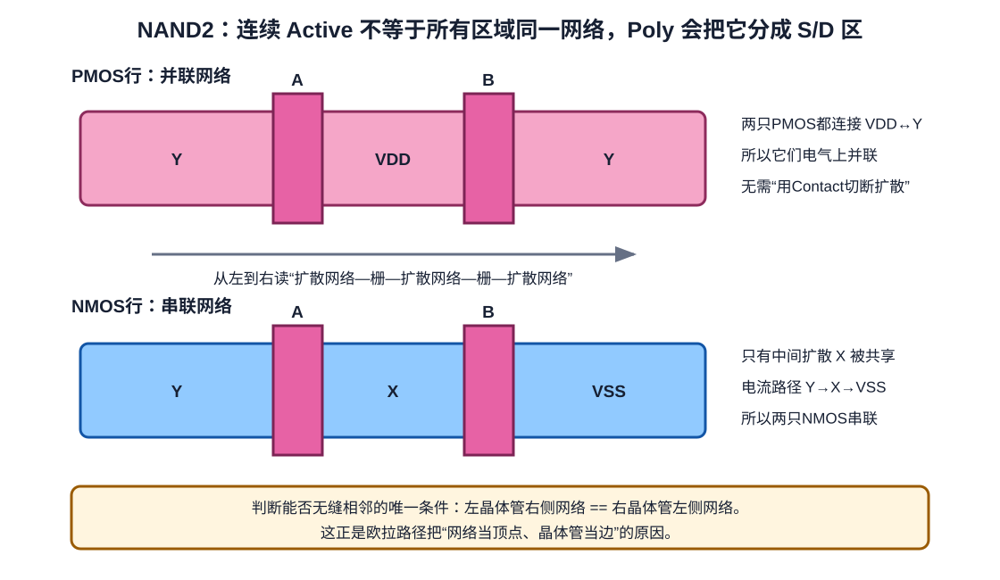

第 5 章 NAND、NOR 与扩散共享
从串并联网络走到 Euler 路，而不是背“最紧凑版图”
- 独立推导 NAND2、NOR2 的 PUN/PDN 和正确晶体管网表。
- 判断两只相邻 MOS 能否共享扩散，并理解 contact 不能改变这个条件。
- 理解为什么把网络当顶点、晶体管当边会得到 Euler 放置问题。
5.1 NAND2：先设计下拉网络
NAND2 只在 A=1 且 B=1 时输出 0。因此 PDN 中两只 NMOS 串联；PUN 是其对偶，两只 PMOS 并联。
| A | B | PDN | PUN | Y |
|---|---|---|---|---|
| 0 | 0 | 断 | 两支导通 | 1 |
| 0 | 1 | 断 | A 支导通 | 1 |
| 1 | 0 | 断 | B 支导通 | 1 |
| 1 | 1 | 通 | 断 | 0 |
.subckt NAND2X1 A B Y VDD VSS
MPA Y A VDD VDD pmos W=1u L=0.15u
MPB Y B VDD VDD pmos W=1u L=0.15u
MNA Y A X VSS nmos W=0.5u L=0.15u
MNB X B VSS VSS nmos W=0.5u L=0.15u
.ends NAND2X1X 是两只串联 NMOS 的内部网络。上面尺寸仍只作语法示意；串联堆叠常需根据目标 slew/load 重新 sizing。
5.2 NOR2：把串并联互换
NOR2 在 A=1 或 B=1 时输出 0，所以 PDN 中 NMOS 并联；PUN 中 PMOS 串联。
.subckt NOR2X1 A B Y VDD VSS
MPA X A VDD VDD pmos W=1u L=0.15u
MPB Y B X VDD pmos W=1u L=0.15u
MNA Y A VSS VSS nmos W=0.5u L=0.15u
MNB Y B VSS VSS nmos W=0.5u L=0.15u
.ends NOR2X15.3 共享扩散的唯一拓扑条件
若把晶体管排成一行，左管右端与右管左端必须属于同一网络，才能消除中间 diffusion break。以 NAND2 为例：

- NMOS 串联可排成
Y-[A]-X-[B]-VSS，共享内部网络 X。 - PMOS 并联可折返成
Y-[A]-VDD-[B]-Y，两管都连接 Y↔VDD。
这也说明“连续 Active 上所有位置都属于同一网络”不成立：每个 gate 下方是受控制的沟道，gate 两侧的扩散片段可以是不同网络。
5.4 把晶体管网络转换为图
为了自动寻找共享顺序，定义一个无向多重图：
- 每个扩散网络是一个顶点，如 Y、X、VSS；
- 每只 MOS 是一条边，连接其两个 S/D 网络；
- 边标签是栅网络 A、B；同一对顶点之间允许多条边，因此是多重图。
沿一条边走过，相当于在版图中从晶体管一侧扩散跨过 gate 到另一侧。若一条路径恰好使用每条边一次，它就是 Euler trail；它给出一个不重复使用晶体管的连续扩散顺序。
对 CMOS 门还多一个实际约束：PMOS 行与 NMOS 行最好找到相同或可对齐的栅标签顺序，这样 A、B 的 Poly 可以垂直贯穿上下两行，减少绕线。各自存在 Euler 路不代表一定存在共同顺序。
5.5 找不到共同 Euler 路怎么办
不能为了保持一条 Active 而改变网络。可选策略包括：
- 交换可交换的输入顺序，枚举另一条 Euler trail；
- 翻转某只 MOS 的源漏方向；
- 在一行中引入 diffusion break；
- 折叠宽晶体管并重新排列 finger；
- 接受多一段局部互连，以换取 pin access、规则和更低拥塞。
最少 diffusion break 不是唯一目标。一个更窄却无法布线或 pin 无法从上层访问的单元并不是更好的单元。
5.6 从 NAND/NOR 走向复杂门
例如 AOI21：
Y = NOT(A·B + C)
PDN：A 与 B 串联，这一支再与 C 并联
PUN：对偶网络——A 与 B 并联，这一组再与 C 串联先在逻辑层构造 PDN，再做对偶得到 PUN；随后给每个内部网络命名，转换为图，寻找共同栅顺序。这个过程可推广到 AOI/OAI 等复杂组合门。
- 根据本章 NOR2 网表，列出 PMOS 图和 NMOS 图的顶点、边。
- 写出一个连续 PMOS 扩散序列和一个连续 NMOS 扩散序列。
- 检查两行的栅标签能否对齐。
一种答案
PMOS 串联可取 VDD-[A]-X-[B]-Y。NMOS 两条并联边可取 VSS-[A]-Y-[B]-VSS，栅顺序均为 A、B。若翻转整行或交换输入，也会有等价序列。
- 两个 PMOS 共享一块扩散，是否一定串联？为什么？
- 图中的顶点、边、边标签分别对应什么版图对象？
- 共同 Euler 顺序能优化什么，又不能保证什么？
参考答案
不一定，串并联由两端网络拓扑决定。顶点是扩散网络，边是 MOS，标签是 gate net。共同顺序有利于扩散连续和上下栅对齐，但不能保证 DRC、最小面积、内部布线、pin access、寄生或时序最优。